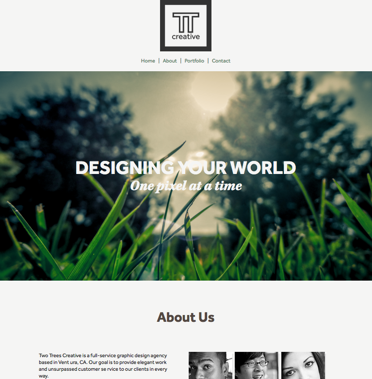

Thyme To Cook
*Responsive Design, HTML and CSS.
This project focused on making a fully responsive website with a consistent design theme. This was accomplished with a processed design language and some media querys.
Double T
*Applied HTML and CSS to pre-made design.
This project focused on transforming a mock-up into a functioning website using HTML and CSS only.